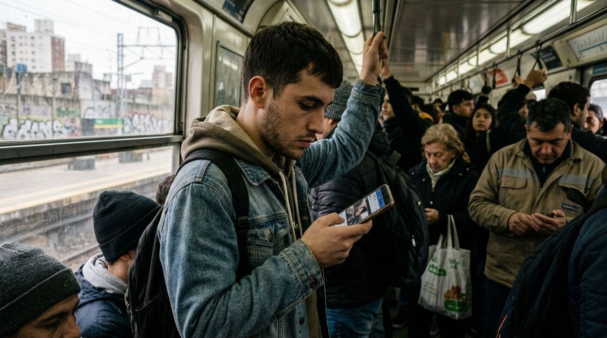

Gremios bonaerenses se plantan ante Kicillof: "Con esta inflación, sentate a negociar"
Tras el dato de inflación, docentes, estatales y judiciales le exigieron al gobernador la reapertura urgente de la discusión salarial.
El dato de inflación de agosto terminó de encender la mecha en la provincia de Buenos Aires. Con un 1,7% mensual y un acumulado del 21,3% en lo que va del año, los gremios estatales (ATE), docentes (FUDB) y judiciales (AJB) bonaerenses se movieron rápido y le presentaron una nota formal al gobierno de Axel Kicillof para exigir la convocatoria a paritarias.
El gobierno provincial y los gremios habían acordado en su momento una suba acumulada del 7% dividida en dos tramos. Ese entendimiento contemplaba una revisión para septiembre, pero hasta ahora no hubo convocatoria oficial. Con el dato de inflación en la mano, los gremios ya no están dispuestos a esperar.
"Con esta inflación, sentate a negociar", es el mensaje unificado que bajaron desde los distintos sectores, advirtiendo que si no hay respuesta a la brevedad, el conflicto en la provincia más grande del país escalará hacia medidas de fuerza.
- Los gremios estatales, docentes y judiciales de la provincia le marcaron la cancha a Kicillof.
- Exigen que reabra las paritarias ya mismo porque el aumento del 7% anterior quedó viejísimo con la inflación.
- Si la provincia se hace la distraída, se viene un paro general en Buenos Aires.